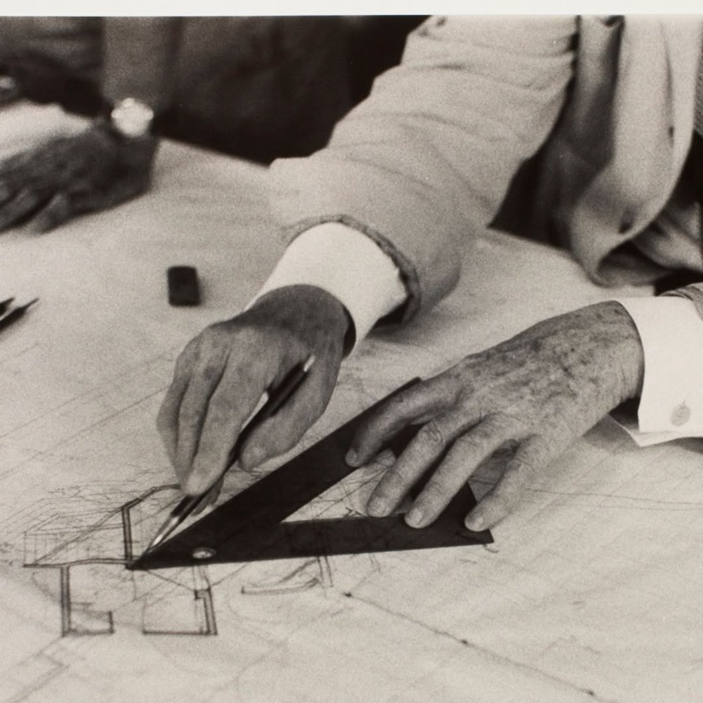

- Born:
- June 8, 1867 — Richland Center, Wisconsin, US
- Died:
- April 9, 1959 — Phoenix, Arizona, US (age 91)
Wright began with the plan and let the walls follow. Rooms ran into each other around a central hearth, roofs reached far past the windows, and the house sat low against the ground it was built on.
In the Prairie years around Chicago he worked out a horizontal language of long eaves, bands of casement windows and brick laid with deep horizontal joints. Later, in the Usonian houses, he cut cost with slab floors, radiant heat and a small kit of standard parts.
He designed the furniture, the art glass, the lamps and often the textiles. The building was one drawing from the foundation to the door handle, and clients were rarely allowed to change it.